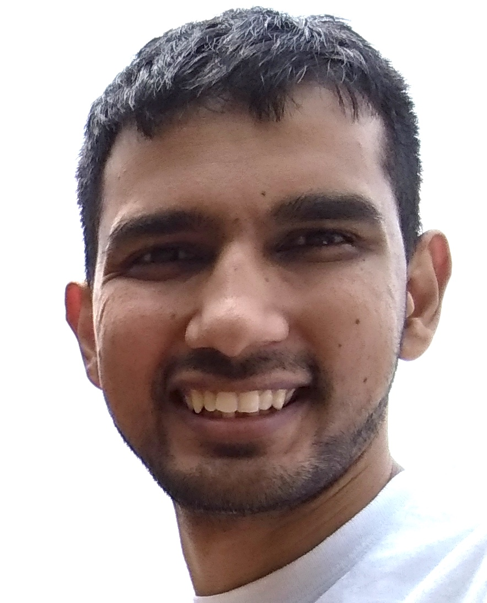

Hi! I am Neeraj Sharma: a researcher + engineer + amused by "signals" of nature.
+ On Feb. 2019 - Now, Currently, I am a Post-Doctoral researcher at the Neuroscience Institute, Carnegie Mellon University (CMU), Pittsburgh.
My research focuses on understanding how human brain identifies talker differences while listening to conversational speech. I am studying this using behavioral and EEG experiments with multi-talker speech utterances. I am also interested in improvising the automatic speech recognition systems
based on the understanding of how humans attend to conversational speech.
I am working with the mentorship of Prof. Lori Holt and Prof. Barbara Shinn-Cunningham.
+ Mar. 2017 - Nov. 2018, I was a BrainHub Post-doctoral Fellow, and pursued a human and machine perception study on talker change detection. This research was generously supported by the BrainHub, at CMU.
I carried this work with guidance of Prof. Lori Holt (CMU) and Prof. Sriram Ganapathy (IISc). To know more about the findings: click here.
+ On June 2018, I received Masters in Engineering (by Research) and PhD from the Indian Institute of Science, Bengaluru, India. My thesis is titled "Information-rich sampling of time-varying signals". I had my reearch habitat at the wonderful Speech and Audio Group, Dept. Electrical Communication Engineering, lead by Prof. T. V. Sreenivas. To get a quick description of the thesis: click here.
+ On June 2009, I received a Bachelors in Techology in Instrumentation and Electronics Engineering,
from the College of Engineering and Technology, Bhubaneswar. Subsequently, I joined the Indian Institute of Science (IISc).
EMAIL-ID: X@Y.com where, X is neerajww and Y is gmail
GitHubID: neerajww.
Random Processes, Pattern Recognition and Neural Networks, Time-Frequency Analysis, Adaptive Signal Pro- cessing, Matrix Theory, Digital Signal Compression, Non-linear Signal Processing, Stochastic Models for Speech Recognition, Digital Image Processing, Introduction to Neuroscience. The above courses are the few I took from the big list at IISc.
Time Frequency Analysis (E9-213) in Jan-2012. Course was offered by Prof. Chandra Sekhar Seelamantula. Signal Quantization and Compression (E9-221) in Aug-2011. Course was offered by Prof. T. V. Sreenivas.
Use the sunrise as an alarm. It has no snooze.
Thoughts
Good and bad is a function of surroundings.
Haricharan
"Throwing Light into the Tunnel: auditory models and perception"
[inivited talk in WiSSAP-2015, 04-01-2015]
Click here to get the PDF.
"Sound Analysis: some knowns and unknowns"
[in SIAM-IISc Chapter Student Talk Series, @IISc, 08-05-2015]
Click here to get the PDF.
"Detect and Sample: an event-triggered approach for data acquisition and processing"
[Work Discussion at ICTS-IISc Workshop, 08-01-2015]
"Turns are Good: Processing Extrema of a Nonstationary Narrowband Signal"
[Delivered in Spectrum Lab, IISc, 22-10-2013]
"Function Approximations"
[Links to some good PDFs, 11-01-2016]
Taylor, Fourier, Chebyshev, Pade, ...
Click here to get the PDF.
"Detect and Sample: Questioning uniform Nyquist-rate sampling"
[Delivered on IEEE Day celebrations in campus, 01-10-2013]
Technical books I have liked: I sometimes update the rarely updated list here: click .